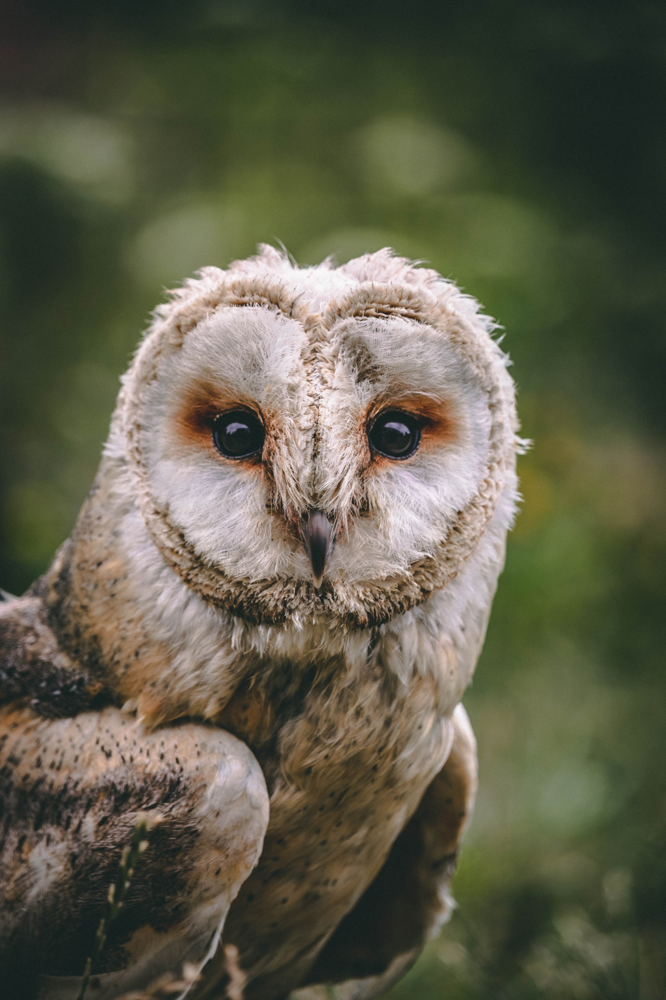
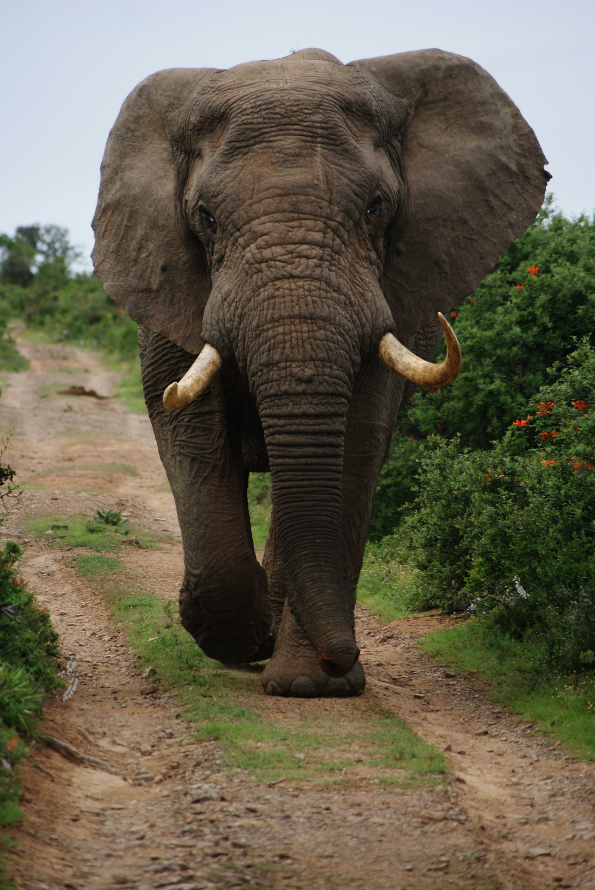
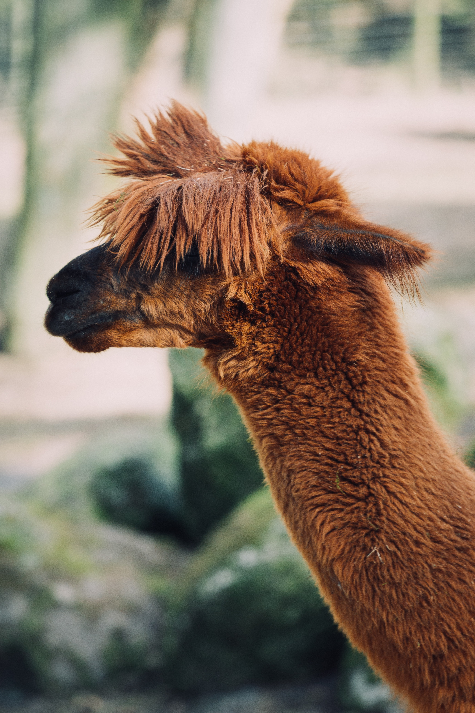
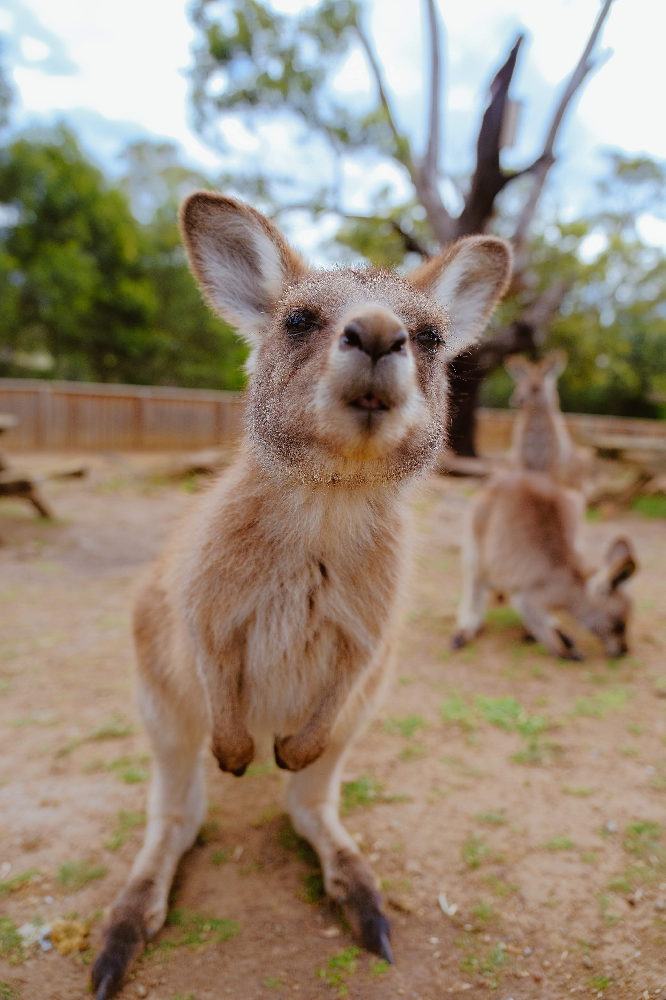
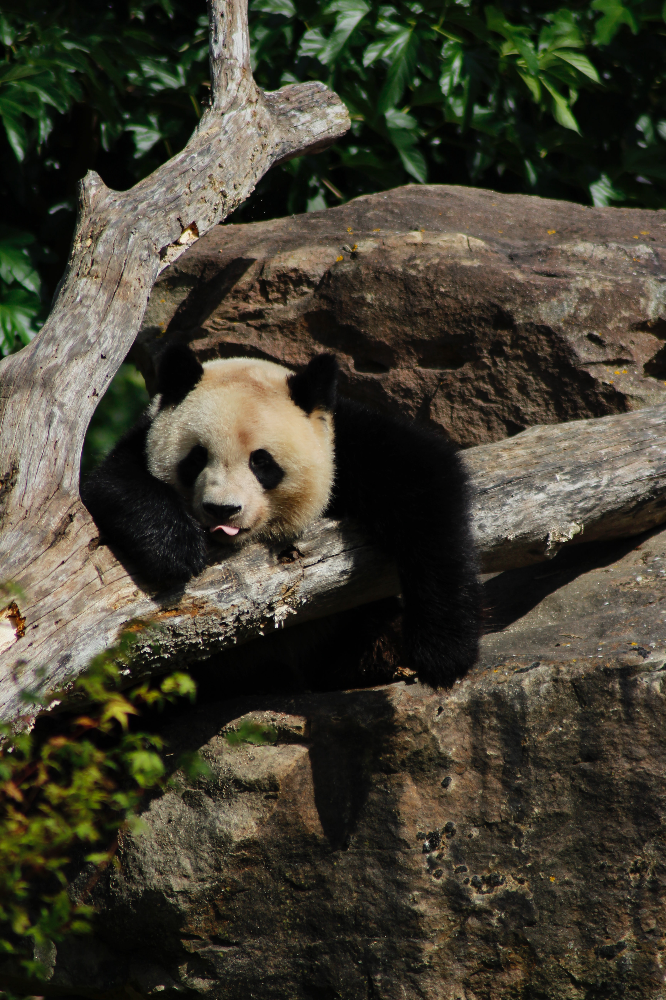

Fantastic Animals
- 
-

- 
- 
- 
- 
Owl
Owls are birds from the order Strigiformes, which includes over 200 species of mostly solitary and nocturnal birds of prey typified by an upright stance, a large, broad head, binocular vision, binaural hearing, sharp talons, and feathers adapted for silent flight. Exceptions include the diurnal northern hawk-owl and the gregarious burrowing owl.
Owls hunt mostly small mammals, insects, and other birds, although a few species specialize in hunting fish. They are found in all regions of the Earth except the polar ice caps and some remote islands.
Owls are divided into two families: the true (or typical) owl family, Strigidae, and the barn-owl family, Tytonidae.
Lemur
Lemurs (from Latin lemures – ghosts or spirits) are wet-nosed mammals of the superfamily Lemuroidea, divided into 8 families and consisting of 15 genera and around 100 existing species. They are native only to the island of Madagascar. Most existing lemurs are small, have a pointed snout, large eyes, and a long tail. They chiefly live in trees (arboreal), and are active at night (nocturnal).
Lemurs share resemblance with other primates, but evolved independently from monkeys and apes. Due to Madagascar's highly seasonal climate, lemur evolution has produced a level of species diversity rivaling that of any other primate group. Until shortly after humans arrived on the island around 2,000 years ago, there were lemurs as large as a male gorilla. Most species have been discovered or promoted to full species status since the 1990s; however, lemur taxonomic classification is controversial and depends on which species concept is used.
Elephant
Elephants are the largest existing land animals. Three living species are currently recognised: the African bush elephant, the African forest elephant, and the Asian elephant. They are an informal grouping within the proboscidean family Elephantidae. Elephantidae is the only surviving family of proboscideans; extinct members include the mastodons. Elephantidae also contains several extinct groups, including the mammoths and straight-tusked elephants. African elephants have larger ears and concave backs, whereas Asian elephants have smaller ears, and convex or level backs. The distinctive features of all elephants include a long proboscis called a trunk, tusks, large ear flaps, massive legs, and tough but sensitive skin. The trunk is used for breathing, bringing food and water to the mouth, and grasping objects. Tusks, which are derived from the incisor teeth, serve both as weapons and as tools for moving objects and digging. The large ear flaps assist in maintaining a constant body temperature as well as in communication. The pillar-like legs carry their great weight.
Elephants are scattered throughout sub-Saharan Africa, South Asia, and Southeast Asia and are found in different habitats, including savannahs, forests, deserts, and marshes. They are herbivorous, and they stay near water when it is accessible. They are considered to be keystone species, due to their impact on their environments. Elephants have a fission–fusion society, in which multiple family groups come together to socialise. Females (cows) tend to live in family groups, which can consist of one female with her calves or several related females with offspring. The groups, which do not include bulls, are usually led by the oldest cow, known as the matriarch.
Llama
The llama (Lama glama) is a domesticated South American camelid, widely used as a meat and pack animal by Andean cultures since the Pre-Columbian era.
Llamas are social animals and live with others as a herd. Their wool is soft and contains only a small amount of lanolin. Llamas can learn simple tasks after a few repetitions. When using a pack, they can carry about 25 to 30% of their body weight for 8 to 13 km (5–8 miles). The name llama (in the past also spelled "lama" or "glama") was adopted by European settlers from native Peruvians.
The ancestors of llamas are thought to have originated from the Great Plains of North America about 40 million years ago, and subsequently migrated to South America about three million years ago during the Great American Interchange. By the end of the last ice age (10,000–12,000 years ago), camelids were extinct in North America. As of 2007, there were over seven million llamas and alpacas in South America and over 158,000 llamas and 100,000 alpacas, descended from progenitors imported late in the 20th century, in the United States and Canada.
Kangaroo
The kangaroo is a marsupial from the family Macropodidae (macropods, meaning "large foot"). In common use the term is used to describe the largest species from this family, the red kangaroo, as well as the antilopine kangaroo, eastern grey kangaroo, and western grey kangaroo.[1] Kangaroos are indigenous to Australia and New Guinea. The Australian government estimates that 42.8 million kangaroos lived within the commercial harvest areas of Australia in 2019, down from 53.2 million in 2013.
As with the terms "wallaroo" and "wallaby", "kangaroo" refers to a paraphyletic grouping of species. All three refer to members of the same taxonomic family, Macropodidae, and are distinguished according to size. The largest species in the family are called "kangaroos" and the smallest are generally called "wallabies". The term "wallaroos" refers to species of an intermediate size. There are also the tree-kangaroos, another type of macropod, which inhabit the tropical rainforests of New Guinea, far northeastern Queensland and some of the islands in the region.
Panda
The giant panda (Ailuropoda melanoleuca), also known as the panda bear (or simply the panda), is a bear species endemic to China. It is characterised by its bold black-and-white coat and rotund body. The name "giant panda" is sometimes used to distinguish it from the red panda, a neighboring musteloid. Though it belongs to the order Carnivora, the giant panda is a folivore, with bamboo shoots and leaves making up more than 99% of its diet. Giant pandas in the wild will occasionally eat other grasses, wild tubers, or even meat in the form of birds, rodents, or carrion. In captivity, they may receive honey, eggs, fish, yams, shrub leaves, oranges, or bananas along with specially prepared food.
The giant panda lives in a few mountain ranges in central China, mainly in Sichuan, but also in neighbouring Shaanxi and Gansu. As a result of farming, deforestation, and other development, the giant panda has been driven out of the lowland areas where it once lived, and it is a conservation-reliant vulnerable species.